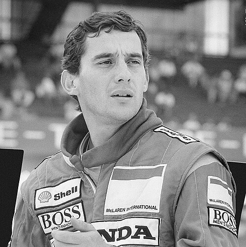
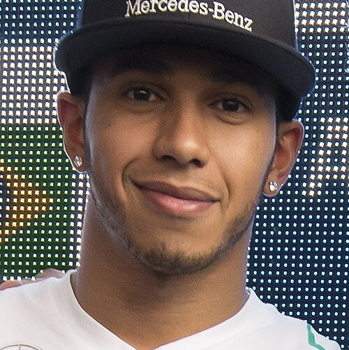

Michael Schumacher

Ayrton Senna

Lewis Hamilton
A Fórmula 1 reúne gerações de talentos que fizeram história nas pistas. Conheça alguns dos pilotos que marcaram e ainda marcam o esporte.
Com foco na paixão pelo automobilismo, esta página reúne pilotos que representam a Fórmula 1, destacando talento, velocidade e superação. Aqui você pode conhecer alguns dos nomes que marcaram e continuam marcando a história do esporte nas pistas.